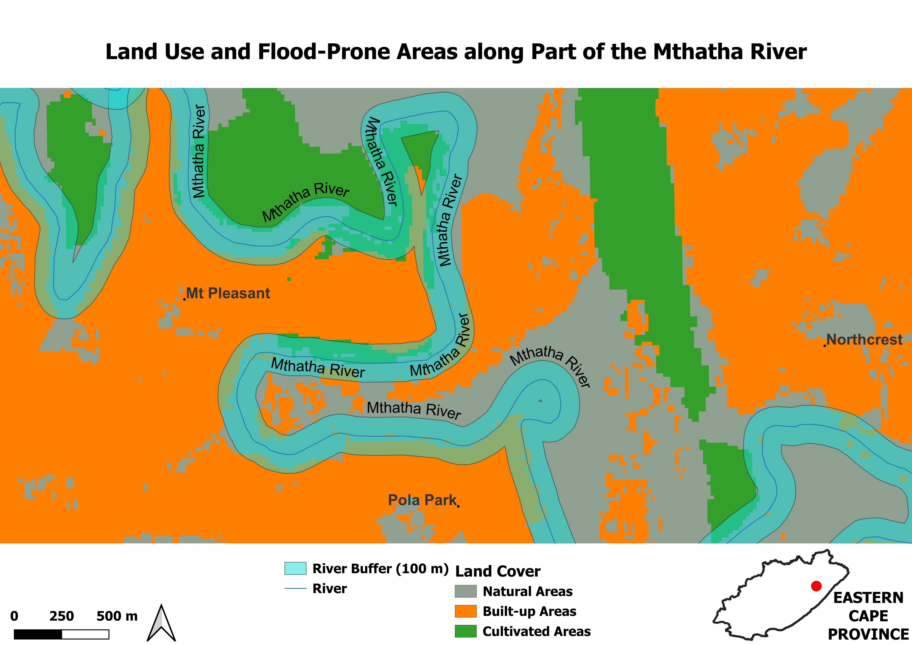

Land Use and Flood-Prone Areas Along Rivers - Mthatha Region
Objective
To identify and map flood-prone areas along the Mthatha River by analyzing land use within a 100-metre buffer zone using the 2022 National Land Cover dataset in QGIS. This study aims to highlight the intersection of built-up, cultivated, and natural areas in flood risk zones, providing critical information to support flood risk management and urban planning, especially in light of recent (2025) severe flooding events in the Mthatha region.
Method Summary
- Acquired and processed the 2022 National Land Cover (NLC) raster dataset for the Mthatha region.
- Performed land cover classification to delineate natural, cultivated, built-up, and combined built-up-cultivated areas using spectral and thematic attributes.
- Generated a 100-metre buffer zone polygon around river networks to define flood-prone extents.
- Conducted spatial overlay analysis to extract and quantify land use types within the defined buffer zones.
- Applied GIS visualization techniques to map spatial correlations between land cover distribution and flood risk zones.
Focus Area
Mthatha, King Sabata Dalindyebo Local Municipality, Eastern Cape
Tools Used
- QGIS 3.42.3 (Münster)
- Raster Calculator
- Geoprocessing Tools: Buffer
- SA National Land Cover 2022 dataset
- SA Administrative Boundaries
- Google Earth (for place names)
- Open Streen Map for roads(highways) and rivers
Map Outputs
